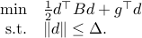
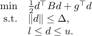

Codes
This page collects some codes that I write. The codes are written in the
hope that they are helpful, but there is no guarantee that they will work
properly. The codes probably call some subroutines that are not provided here,
and I try to instruct in the comments how to obtain those subroutines.
This page is updated from time to time.
Optimization
A fortran subroutine to solve a trust region subproblem

A fortran subroutine to solve a trust region subproblem with box constrains, namely

Numerical Linear Algebra
A fortran subroutine to solve a linear system with a positive definite coefficient matrix.
A fortran subroutine to calculate all the eigenvalues of a symmetric matrix.
A fortran subroutine to calculate the largest eigenvalues of a symmetric matrix and the corresponding eigenvectors.